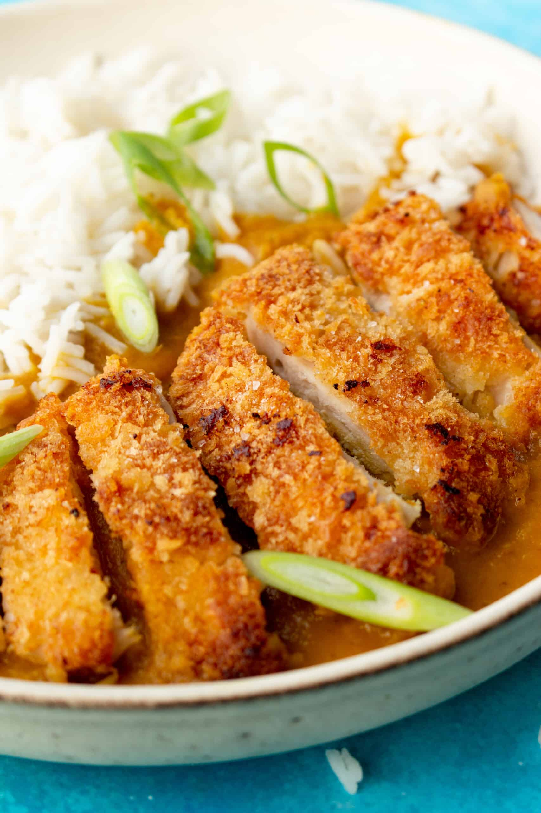

Chicken Katsu Curry

Description
Traditional Japanese dish consisting katsu style chicken with rice and a Japanese curry sauce.
Ingredients
- Ginger
- Garlic
- Carrots
- Onion
- Potato
- Various ingredients to make the sauce
- Chicken
- Egg
- Flour
- Breadcrumbs
- Cornflour
Steps
- Dice onion, garlic and ginger. Lightly fry in pot until fragrant.
- Roughly chop carrots and potatoes. Set aside for now.
- Add various ingredients for sauce and bring to boil.
- Add roughly chopped carrots and potatoes and bring back up to boil. Reduce to simmer for 20 minutes, stirring regularly.
- Once carrots and potatoes have softened, add cornflour slurry until sauce is desired thickness.
- Meanwhile, flour egg & breadcrumb the chicken.
- Fry in hot oil until golden brown on both sides.
- Serve on rice with pickled ginger as a side.